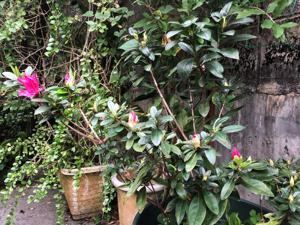
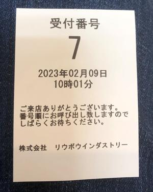

うるがいの話 ある日
最新: 動画の音量レベル【うるがいの話 ある日】とは 一日だけのプログです
『うるがいの話』の最新一日だけのプログで、通信料が少なく経済的だ。カニの画像をクリックすると全ての日付が載る『うるがいの話』サイトを表示します
|
|
【うるがいの話】 うるがい(ｳﾙｶﾞｲ urugai)とは、『もずくがに』の名前でとても大きくなります。 |
|---|---|
|
|
【カミマヤーの話】 猫のことを方言でマヤーといいます。カミマヤー（kamimayaa）とは、神の猫のことです。 |
|
【たながぁの音楽】 たながぁ（ﾀﾅｶﾞｰ tanagaa）とは手長えびのことで、何種類かあり大きいのは車 エビぐらいになります。 |

|
【ぶながぁの話】 ぶながぁ(ﾌﾞﾅｶﾞｰ bunagaa)とは、赤い髪の毛、赤い身体、そして身長は１ｍ２０ｃｍ ぐらい、川の蟹を食べているの目撃された。場所は沖縄県国頭郡大宜味村のと ある村僕の隣近所に住んでいる爺さんから、聞いた話です。 |
|
|
【ギーマの話】 ギーマ(giima)とは、山原の里山に咲くスズランに似た、 花を付けます。実は食べられます、 気が付くと口の周りが紫になっています。 |
2023年02月09日 (木）動画の音量レベル
17:52
 
高性能のディスクトップパソコンＰＣ３号に、オーディオインターフェース（
パソコンと楽器を接続するために必要な音楽機材の一種で、ＤＴＭや宅録に欠
かせないアイテム、再生する音質もいいと書かれている）機器を接続し、ユー
チューブ動画を録画したところ、音量レベルが小さすぎ！る。それに気づかず
、ユーチューブに動画をアップ、そして数日が過ぎユーチューブで動画をみる
と音がほとんど聞こえず、音量を最大にするとなんとか聞こえる（それでも、
親指を立ててくれた視聴者が一人いたが）。オーディオインターフェース機器
を外せば、それなりに音量レベルは上がるのだが、音質がな・・・、ちなみに
接続前後の音質の違いは、私は分からない。ま、せっかくなので接続したまま
でＰＣ３号をいろいろ調べ、サウンドの録音、出力を最大にしてユーチューブ
に動画をアップする、そｒでも音量レベルは低い（ラウドネスの値）。ウーン
音量レベルを上げるソフトを探すかと・・・、話は長くなるので結論だけ。
フリーソフトウェアＦＦｍｐｅｇを利用して、録画の音量レベルを確認し、そ
の音量レベルを元に、音量レベルを大きくする。具体的は・・・・・・・・・
おっと、時間ですよ、おかみさん。明日に続く
１７時４７分 ビットコインの総資産 ￥８、６２４（↓１７６）